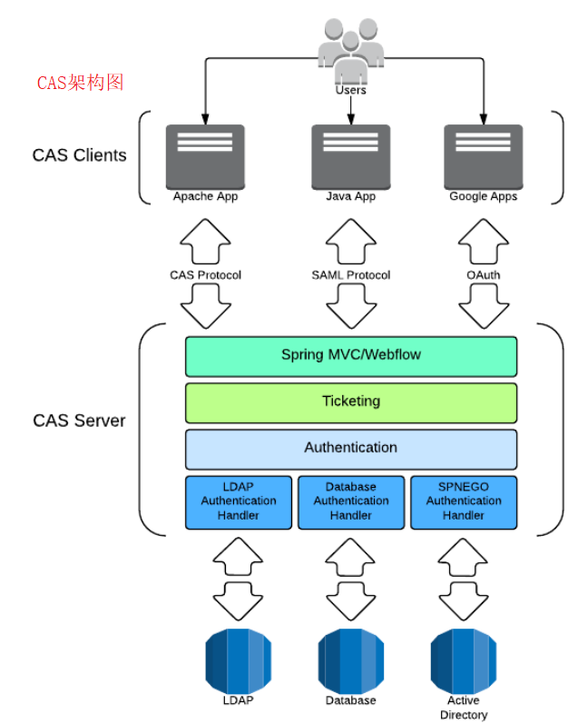
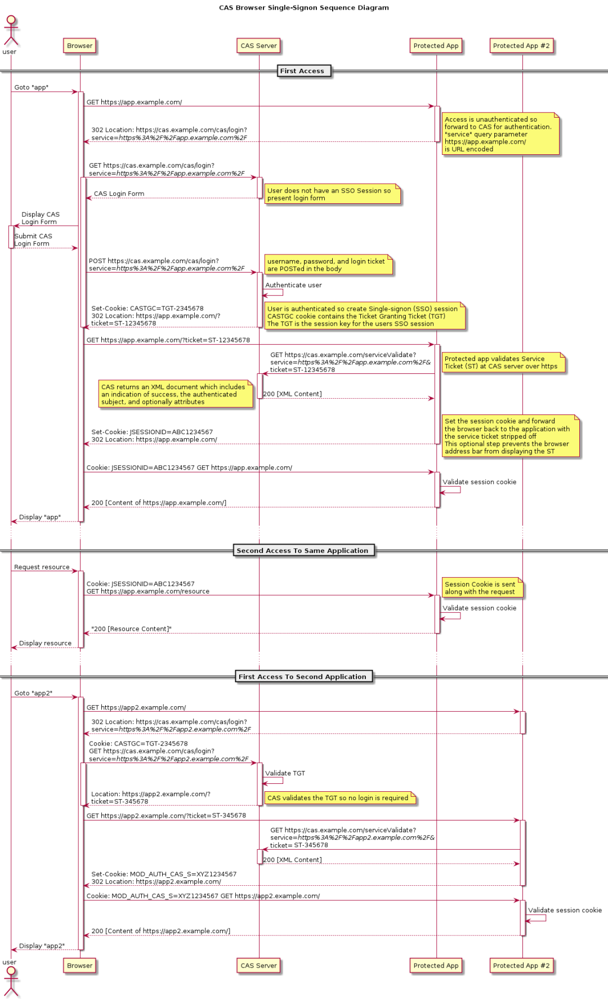
https://github.com/apereo/cas-overlay-template
keytool -genkey -alias casserver -keyalg RSA -keystore ./keystore
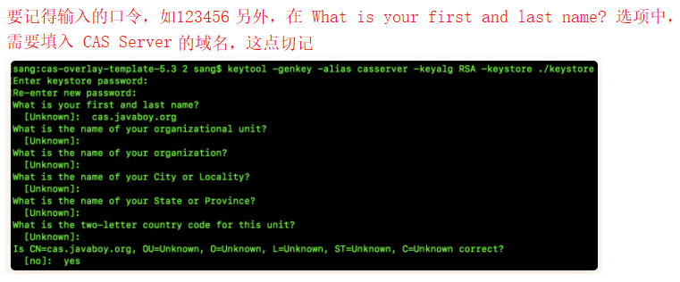
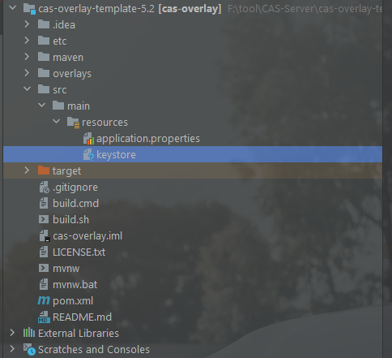
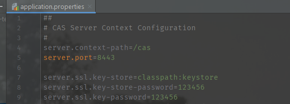
build.cmd run，第一次会有点久，成功后如图：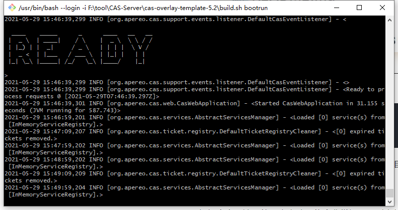
https://127.0.0.1:8443/cas/login,访问成功即可。默认的用户名是 casuser，密码是 Mellon。可以再配置文件中修改,改完重启即可cas.authn.accept.users=casuser::Mellon
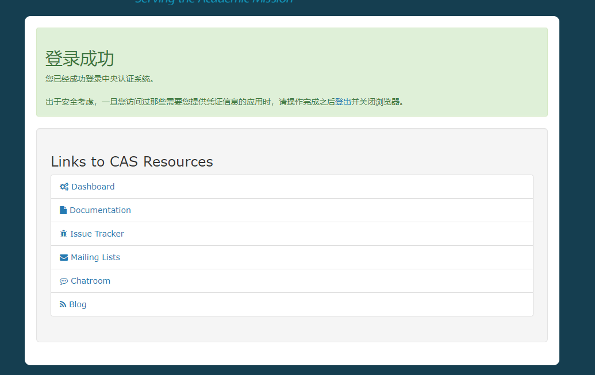
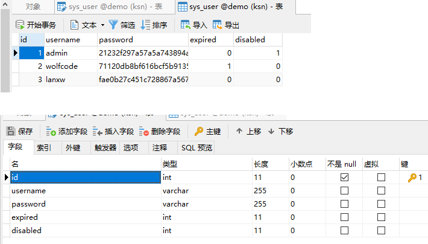
<!--新增支持jdbc验证-->
<dependency>
<groupId>org.apereo.cas</groupId>
<artifactId>cas-server-support-jdbc</artifactId>
<version>${cas.version}</version>
</dependency>
<!--使用mysql驱动-->
<dependency>
<groupId>mysql</groupId>
<artifactId>mysql-connector-java</artifactId>
<version>5.1.21</version>
</dependency>
若算法为自定义，实现org.springframework.security.crypto.password.PasswordEncoder接口，并且把类名配置在passwordEncoder.type
#jdbc验证配置
#Query Database Authentication 数据库查询校验用户名开始
#查询账号密码sql，必须包含密码字段
cas.authn.jdbc.query[0].sql=select * from sys_user where username=?
#指定上面的sql查询字段名（必须）
cas.authn.jdbc.query[0].fieldPassword=password
#指定过期字段，1为过期，若过期需要修改密码
cas.authn.jdbc.query[0].fieldExpired=expired
#为不可用字段段，1为不可用，
cas.authn.jdbc.query[0].fieldDisabled=disabled
#数据库方言hibernate的知识
cas.authn.jdbc.query[0].dialect=org.hibernate.dialect.MySQLDialect
#数据库驱动
cas.authn.jdbc.query[0].driverClass=com.mysql.jdbc.Driver
#数据库连接
cas.authn.jdbc.query[0].url=jdbc:mysql://127.0.0.1:3306/demo?useUnicode=true&characterEncoding=UTF-8
#数据库用户名
cas.authn.jdbc.query[0].user=root
#数据库密码
cas.authn.jdbc.query[0].password=root
#默认加密策略，通过encodingAlgorithm来指定算法，默认NONE不加密
cas.authn.jdbc.query[0].passwordEncoder.type=DEFAULT
cas.authn.jdbc.query[0].passwordEncoder.characterEncoding=UTF-8
cas.authn.jdbc.query[0].passwordEncoder.encodingAlgorithm=MD5
#Query Database Authentication 数据库查询校验用户名结束
#jdbc验证配置
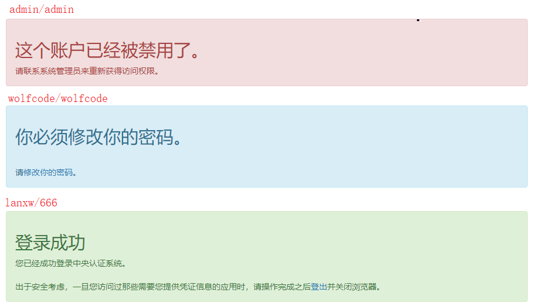
我们已经把CAS Server端的验证变成使用JDBC的方式认证,而且在数据库中也已经对明文密码使用md5进行加密,但是只是用md5加密安全性不够高.所以一般我们会对密码使用md5+盐加密来增加密码管理的安全性.我们需要修改application.properties,在配置文件中指定盐值和加密次数: 对应的sys_user_encode的脚本也是从上面的github地址获取.
#Encode Database Authentication 开始
#加密次数
cas.authn.jdbc.encode[0].numberOfIterations=2
#该列名的值可替代上面的值，但对密码加密时必须取该值进行处理(如果使用这个配置需要把上面的配置注释)
#cas.authn.jdbc.encode[0].numberOfIterationsFieldName=
# 盐值固定列
cas.authn.jdbc.encode[0].saltFieldName=username
#静态盐值(如果使用这个配置需要把上面的配置注释)
#cas.authn.jdbc.encode[0].staticSalt=.
cas.authn.jdbc.encode[0].sql=select * from sys_user_encode where username=?
#对处理盐值后的算法
cas.authn.jdbc.encode[0].algorithmName=MD5
cas.authn.jdbc.encode[0].passwordFieldName=password
cas.authn.jdbc.encode[0].expiredFieldName=expired
cas.authn.jdbc.encode[0].disabledFieldName=disabled
cas.authn.jdbc.encode[0].url=jdbc:mysql://127.0.0.1:3306/demo?useUnicode=true&characterEncoding=UTF-8
cas.authn.jdbc.encode[0].dialect=org.hibernate.dialect.MySQLDialect
cas.authn.jdbc.encode[0].user=root
cas.authn.jdbc.encode[0].password=root
cas.authn.jdbc.encode[0].driverClass=com.mysql.jdbc.Driver
#Encode Database Authentication 结束
src/main/resources/services文件夹，再创建client1-99.json文件，（这个配置可以参考官方给出的模版：overlays/org.apereo.cas.cas-server-webapp-tomcat-5.3.14/WEB-INF/classes/services/Apereo-10000002.json） {
// @calss 指定注册服务类，这个是固定的org.apereo.cas.services.RegexRegisteredService。
"@class": "org.apereo.cas.services.RegexRegisteredService",
// serviceId 则通过正则表达式用来匹配具体的请求。
"serviceId": "^(https|http)://.*",
// name 是接入的 client 的名称。
"name": "client1",
// id 是接入的 client 的 id。
"id": 99,
// description 是接入的 client 的描述信息。
"description": "应用1 的定义信息",
// evaluationOrder 则指定了执行的优先级。
"evaluationOrder": 1
}
src/main/resources/application.properties下配置#指定配置 JSON 文件的位置。
cas.serviceRegistry.json.location=classpath:/services
#开启 JSON 识别。
cas.serviceRegistry.initFromJson=true
.cer文件keytool -export -trustcacerts -alias casserver -file ./cas.cer -keystore ./keystore
keytool -import -v -trustcacerts -alias casserver -file ./cas.cer -storepass changeit -keystore "%JAVA_HOME%/jre/lib/security/cacerts"
keytool -import -v -trustcacerts -alias 文件名 -file "文件完整路径" -storepass changeit -keystore "%JAVA_HOME%/jre/lib/security/cacerts"
查看证书命令
keytool -list -keystore cacerts -alias 证书名
默认密码:changeit
删除证书
keytool -delete -alias casserver -keystore cacerts
#CAS Server 的请求域名
127.0.0.1 cas.ksn.com
#CAS Client 的请求域名
127.0.0.1 client1.cas.ksn.com
<dependency>
<groupId>org.springframework.boot</groupId>
<artifactId>spring-boot-starter-web</artifactId>
</dependency>
<dependency>
<groupId>org.springframework.cloud</groupId>
<artifactId>spring-cloud-starter-oauth2</artifactId>
</dependency>
<dependency>
<groupId>org.springframework.cloud</groupId>
<artifactId>spring-cloud-starter-security</artifactId>
</dependency>
@Configuration
@EnableWebSecurity
@EnableGlobalMethodSecurity(prePostEnabled = true)
public class SecurityConfig extends WebSecurityConfigurerAdapter {
// 配置密码
@Bean
public PasswordEncoder passwordEncoder() {
return new BCryptPasswordEncoder();
}
// 简单配置下用户
@Override
protected void configure(AuthenticationManagerBuilder auth) throws Exception {
auth.inMemoryAuthentication()
.withUser("admin").password(passwordEncoder().encode("123")).roles("admin")
.and()
.withUser("user").password(passwordEncoder().encode("123")).roles("user");
}
@Override
protected void configure(HttpSecurity http) throws Exception {
http.csrf().disable().formLogin();
}
}
// 表示开启授权服务器自动化配置
@EnableAuthorizationServer
@Configuration
public class AuthorizationServer extends AuthorizationServerConfigurerAdapter {
@Autowired
ClientDetailsService clientDetailsService;
/**
* 配置token存放位置，可以是内存，redis也可以结合jwt一起使用
* @return
*/
@Bean
TokenStore tokenStore() {
return new InMemoryTokenStore();
}
/**
* 用来配置token的一些基本信息，
* @return
*/
@Bean
AuthorizationServerTokenServices authorizationServerTokenServices() {
DefaultTokenServices services = new DefaultTokenServices();
services.setClientDetailsService(clientDetailsService);
// 是否支持刷新
services.setSupportRefreshToken(true);
// 存储位置
services.setTokenStore(tokenStore());
// 过期时间
services.setAccessTokenValiditySeconds(60 * 60 *2);
// 刷新令牌过期时间
services.setRefreshTokenValiditySeconds(60 * 60 * 24 * 3);
return services;
}
@Bean
public AuthorizationCodeServices authorizationCodeServices() {
// 表示授权码存在内存中
return new InMemoryAuthorizationCodeServices();
}
/**
* 用来配置令牌端点的安全约束，就是说谁能访问，谁不能访问
* @param security
* @throws Exception
*/
@Override
public void configure(AuthorizationServerSecurityConfigurer security) throws Exception {
// 指一个 Token 校验的端点，这个端点我们可以设置成直接访问，后面当资源服务器收到token后，需要去校验token的合法性，就会走这个
security.checkTokenAccess("permitAll")
.allowFormAuthenticationForClients();
}
/**
* 授权码模式需要校验用户和客户端，这里就是校验客户端，可以从数据库查，类似UserDetailsService
* @param clients
* @throws Exception
*/
@Override
public void configure(ClientDetailsServiceConfigurer clients) throws Exception {
clients.inMemory()
.withClient("ksn_client")
.secret(new BCryptPasswordEncoder().encode("ksn_secret"))
.resourceIds("res1")
.authorizedGrantTypes("authorization_code", "refresh_token")
.scopes("all")
.redirectUris("http://www.baidu.com");
}
/**
* 用来配置令牌的访问端点和令牌服务，authorizationCodeServices用来配置授权码的存储位置，这里是先存在内存中
* authorizationServerTokenServices是用来配置token的存储位置，token是用来获取资源的，授权码是用来获取token的用一次就失效
* @param endpoints
* @throws Exception
*/
@Override
public void configure(AuthorizationServerEndpointsConfigurer endpoints) throws Exception {
endpoints.authorizationCodeServices(authorizationCodeServices())
.tokenServices(authorizationServerTokenServices());
}
}
链接一：
http://localhost:8080/oauth/authorize?client_id=ksn_client&response_type=code&scope=all&redirect_uri=http://www.baidu.com
链接二：
localhost:8080/oauth/token?client_id=ksn_client&grant_type=authorization_code&redirect_uri=
http://www.baidu.com&client_secret=ksn_secret&code=h3pZrO
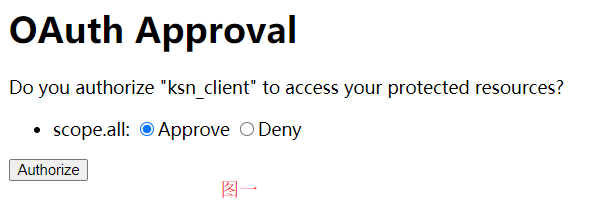 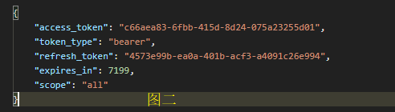
链接一：
http://localhost:8080/oauth/authorize?client_id=ksn_client&response_type=code&scope=all&redirect_uri=http://www.baidu.com
链接二：
https://www.baidu.com/#access_token=b9da9cd7-4498-4859-8b41-ecf497050bc9&token_type=bearer&expires_in=7199
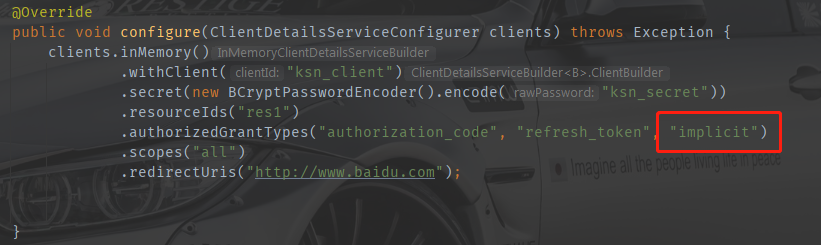
@Bean
@Override
protected AuthenticationManager authenticationManager() throws Exception {
return super.authenticationManager();
}
@Override
public void configure(AuthorizationServerEndpointsConfigurer endpoints) throws Exception {
// 授权码模式，简单模式
// endpoints.authorizationCodeServices(authorizationCodeServices())
// .tokenServices(authorizationServerTokenServices());
// 密码模式
endpoints.authenticationManager(authenticationManager)
.tokenServices(authorizationServerTokenServices());
}
http://localhost:8080/oauth/token
?grant_type=password
&client_id=ksn_client
&client_secret=ksn_secret
&username=admin
&password=123
http://localhost:8080/oauth/token?grant_type=client_credentials&client_id=ksn_client&client_secret=ksn_secret
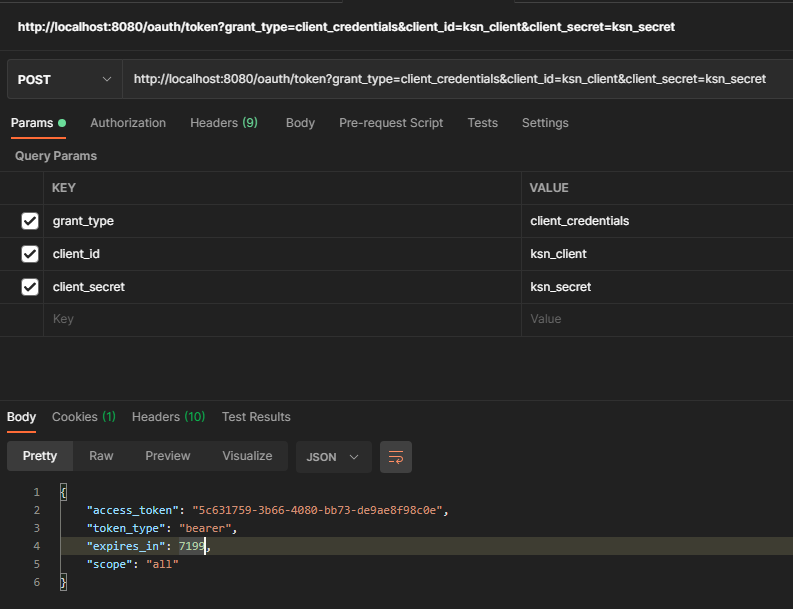
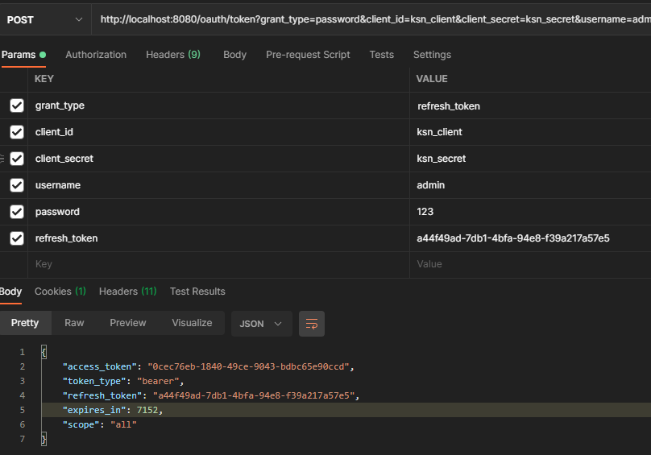
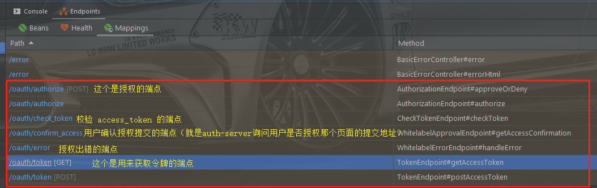
<dependency>
<groupId>org.springframework.boot</groupId>
<artifactId>spring-boot-starter-data-redis</artifactId>
</dependency>
spring.redis.host=127.0.0.1
spring.redis.port=6379
@Autowired
RedisConnectionFactory redisConnectionFactory;
@Bean
TokenStore tokenStore() {
return new RedisTokenStore(redisConnectionFactory);
}
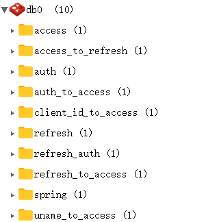
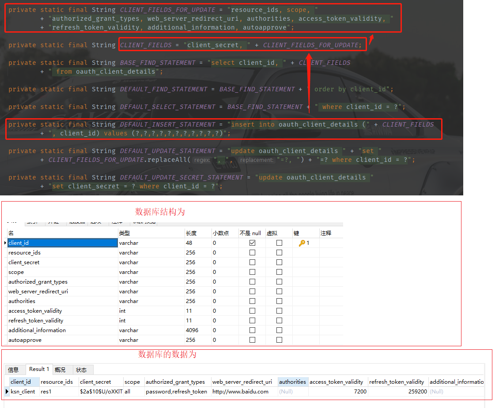
@Autowired
DataSource dataSource;
@Bean
ClientDetailsService clientDetailsService() {
return new JdbcClientDetailsService(dataSource);
}
@Override
public void configure(ClientDetailsServiceConfigurer clients) throws Exception {
clients.withClientDetails(clientDetailsService());
}
@Bean
AuthorizationServerTokenServices tokenServices() {
DefaultTokenServices services = new DefaultTokenServices();
services.setClientDetailsService(clientDetailsService());
services.setSupportRefreshToken(true);
services.setTokenStore(tokenStore);
return services;
}
@Configuration
public class AgileJwtTokenConfig {
@Autowired
RedisConnectionFactory redisConnectionFactory;
// 配置生成方式使用RSA非对称加密算法，token最大长度512
@Bean
public JwtAccessTokenConverter jwtAccessTokenConverter() {
JwtAccessTokenConverter converter = new JwtAccessTokenConverter();
// 非对称加密
converter.setKeyPair(SecureUtil.generateKeyPair("RSA", 512));
return converter;
}
@Bean
public TokenEnhancer tokenEnhancer() {
return (accessToken, authentication) -> {
// 自定义token携带的信息
Map<String, Object> map = Collections.synchronizedMap(new HashMap<>());
map.put("GlobalConstants.PLATFORM_NAME_KEY", "GlobalConstants.PLATFORM_NAME_EN");
((DefaultOAuth2AccessToken) accessToken).setAdditionalInformation(map);
return accessToken;
};
}
/**
* 配置token存放位置，可以是内存，redis也可以结合jwt一起使用
* @return
*/
@Bean
TokenStore tokenStore() {
return new RedisTokenStore(redisConnectionFactory);
}
}
@Bean
AuthorizationServerTokenServices authorizationServerTokenServices() {
TokenEnhancerChain tokenEnhancerChain = new TokenEnhancerChain();
// 告诉spring security把自定义token生产方式加入到TokenEnhancerChain中
tokenEnhancerChain.setTokenEnhancers(CollUtil.newArrayList(jwtAccessTokenConverter, tokenEnhancer));
DefaultTokenServices services = new DefaultTokenServices();
services.setClientDetailsService(clientDetailsService());
// 是否支持刷新
services.setSupportRefreshToken(true);
// 存储位置
services.setTokenStore(tokenStore);
// 刷新 token时把refresh_token也刷新
services.setReuseRefreshToken(true);
// 将自定义的token生产方式加到TokenEnhancer中
services.setTokenEnhancer(tokenEnhancerChain);
return services;
}
@Override
public void configure(AuthorizationServerEndpointsConfigurer endpoints) throws Exception {
// 密码模式
endpoints.authenticationManager(authenticationManager)
.tokenServices(authorizationServerTokenServices())
.accessTokenConverter(jwtAccessTokenConverter)
.tokenStore(tokenStore)
.allowedTokenEndpointRequestMethods(HttpMethod.OPTIONS, HttpMethod.GET, HttpMethod.POST);
}
@Configuration
// 开启资源服务的自动化配置
@EnableResourceServer
public class ResourceServerConfig extends ResourceServerConfigurerAdapter {
@Autowired
RedisConnectionFactory redisConnectionFactory;
@Bean
public PasswordEncoder passwordEncoder() {
return new BCryptPasswordEncoder();
}
@Bean
public TokenStore redisTokenStore() {
return new RedisTokenStore(redisConnectionFactory);
}
@Override
public void configure(ResourceServerSecurityConfigurer resources) {
resources.resourceId("res1").tokenStore(redisTokenStore());
}
@Override
public void configure(HttpSecurity http) throws Exception {
http.authorizeRequests()
.anyRequest().authenticated();
}
}
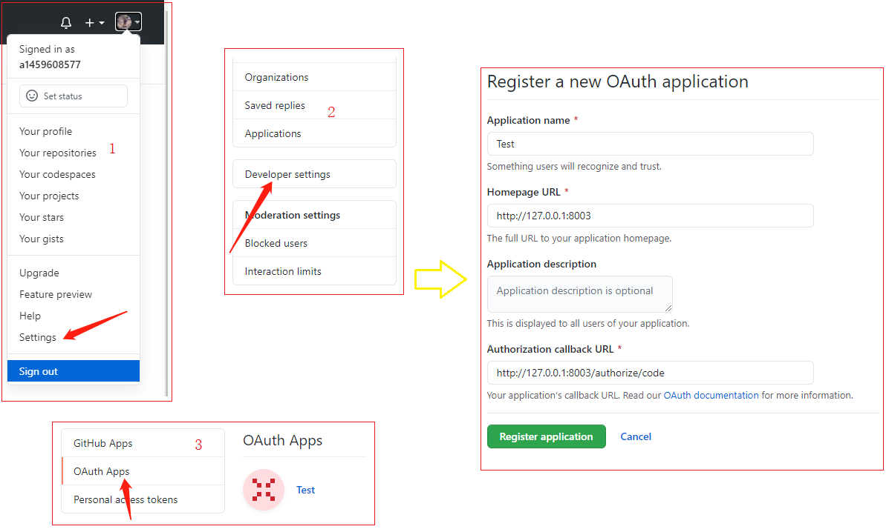
https://github.com/login/oauth/authorize?client_id=xxxxxx&state=ksn
<body>
<p>hello 欢迎来到小站！</p>
<div>
社交账号登录：<a href="https://github.com/login/oauth/authorize?client_id=xxxxxx&state=javaboy">
<svg t="1587352912571" class="icon" viewBox="0 0 1024 1024" version="1.1" xmlns="http://www.w3.org/2000/svg"
p-id="2196" width="32" height="32">
<path d="M512 42.666667A464.64 464.64 0 0 0 42.666667 502.186667 460.373333 460.373333 0 0 0 363.52 938.666667c23.466667 4.266667 32-9.813333 32-22.186667v-78.08c-130.56 27.733333-158.293333-61.44-158.293333-61.44a122.026667 122.026667 0 0 0-52.053334-67.413333c-42.666667-28.16 3.413333-27.733333 3.413334-27.733334a98.56 98.56 0 0 1 71.68 47.36 101.12 101.12 0 0 0 136.533333 37.973334 99.413333 99.413333 0 0 1 29.866667-61.44c-104.106667-11.52-213.333333-50.773333-213.333334-226.986667a177.066667 177.066667 0 0 1 47.36-124.16 161.28 161.28 0 0 1 4.693334-121.173333s39.68-12.373333 128 46.933333a455.68 455.68 0 0 1 234.666666 0c89.6-59.306667 128-46.933333 128-46.933333a161.28 161.28 0 0 1 4.693334 121.173333A177.066667 177.066667 0 0 1 810.666667 477.866667c0 176.64-110.08 215.466667-213.333334 226.986666a106.666667 106.666667 0 0 1 32 85.333334v125.866666c0 14.933333 8.533333 26.88 32 22.186667A460.8 460.8 0 0 0 981.333333 502.186667 464.64 464.64 0 0 0 512 42.666667"
fill="#2c2c2c" p-id="2197"></path>
</svg>
</a>
</div>
<div>国际站：<a href="http://www.javaboy.org">javaboy.org</a></div>
<div>国内站：<a href="http://www.itboyhub.com">itboyhub.com</a></div>
</body>
@ResponseBody
@GetMapping("/code")
public String code(@RequestParam("code") String code, @RequestParam("state") String state) {
HashMap<String, Object> map = new HashMap<>();
map.put("client_id", "cd2857419595e06f3721");// 应用中有
map.put("client_secret", "c07f67405d1563c4d785dc599e9091c1e333e6c6"); // 应用中有
map.put("state", "ksn");// 跟请求的一致
map.put("code", code); // 通过调用授权码接口会跟在url后面
map.put("redirect_uri", "http://127.0.0.1:8003/authorize/code"); // 这里要跟配置的回调地址一模一样
String s = JSONUtil.toJsonStr(map);
// 调用获取token的接口
HttpResponse execute = HttpUtil.createPost("https://github.com/login/oauth/access_token").body(s).execute();
System.out.println(execute.body());
//拿到token放在请求用户信息的地址的请求头中
String token = "token " + execute.body().substring(execute.body().indexOf("=") + 1, execute.body().indexOf("&"));
HashMap<String, String> stringStringHashMap = new HashMap<>();
stringStringHashMap.put("Authorization", token);
HttpResponse execute1 = HttpUtil.createGet("https://api.github.com/user").addHeaders(stringStringHashMap).execute();
// 获取到用户信息
return execute1.body();
}
chain.doFilter(request, response);。而最后一个过滤器是FilterSecurityInterceptor。FilterSecurityInterceptor专门处理授权问题，然后抛出异常被ExceptionTranslationFilter捕捉到，调用catch块中的throwableAnalyzer.getFirstThrowableOfType，判断异常类型是认证异常还是授权异常，如果都不是就走ServletException 异常类型的处理逻辑，然后调用handleSpringSecurityException(request, response, chain, ase);。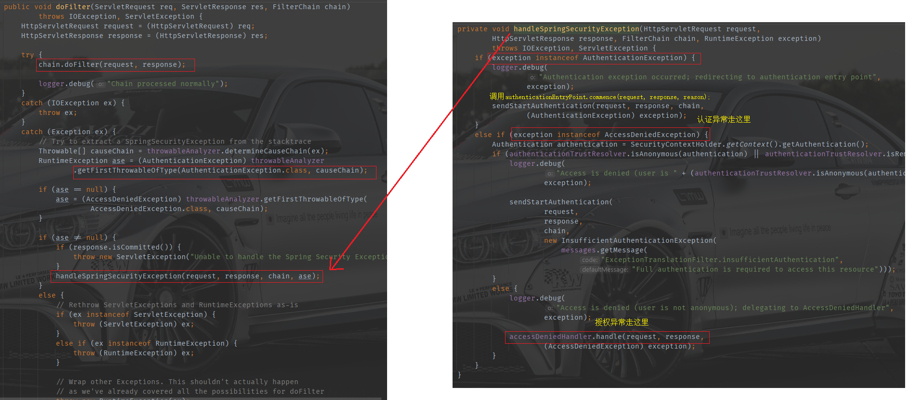